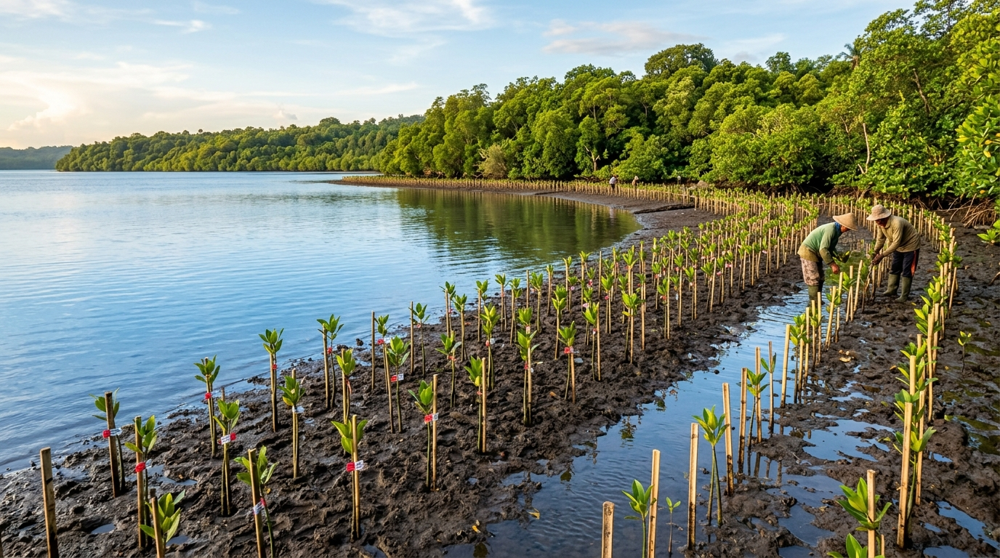

Membangun Jembatan Digital Menuju Masa Depan Lestari
EcoLoka lahir dari kepedulian mendalam terhadap ancaman krisis iklim dan penumpukan sampah di Indonesia, diwujudkan melalui perangkat web cerdas yang mendemokratisasi aksi hijau bagi setiap kalangan.
Tiga Tantangan Nyata yang Menjadi Titik Tolak Kami
Banyak masyarakat sebenarnya ingin berkontribusi menjaga kelestarian lingkungan, namun kerap terbentur kebingungan: "Dari mana harus memulai?" dan "Apakah langkah kecil saya benar-benar memiliki dampak?"
EcoLoka hadir untuk menjawab ketidakpastian tersebut dengan menyediakan data terukur dan panduan yang bisa langsung dipraktikkan dalam kehidupan sehari-hari, berfokus pada tiga isu mendesak:
Beban Tempat Pembuangan Akhir (TPA)
Lebih dari 60% TPA di Indonesia mengalami kelebihan kapasitas (*overcapacity*) akibat minimnya pemilahan sampah organik sejak dari sumbernya.
Tingginya Jejak Emisi Perkotaan
Ketergantungan tinggi pada kendaraan bermotor bensin dan pendingin ruangan terus memacu kenaikan suhu mikro perkotaan.
Kesenjangan Literasi Aksi Hijau
Informasi lingkungan sering kali disajikan dalam bahasa akademis yang kaku, sehingga gagal memicu perubahan kebiasaan harian generasi muda.

Visi & Misi EcoLoka
Arah Gerak Berkelanjutan
Visi Utama
"Mewujudkan masyarakat digital Indonesia yang sadar ekologis, mandiri dalam menghitung dampak lingkungan, dan aktif mempraktikkan gaya hidup nol emisi melalui inovasi teknologi yang inklusif."
Tiga Misi Utama
- Menyederhanakan edukasi keberlanjutan menjadi modul ringkas dan menyenangkan.
- Menghadirkan alat estimasi jejak karbon mandiri yang cepat, privat, dan tanpa beban server.
- Menggalang solidaritas aksi komunitas lewat pemantauan capaian bersama.
Mengapa Solusi Digital untuk Kelestarian Lingkungan?
Tema besar INVENTION 2026 adalah "Innovative Web Solutions for a Smarter Digital Society". Kami menolak anggapan bahwa website ramah lingkungan harus lambat dan monoton.
Rendah Emisi Data (Green Web)
Dengan arsitektur static murni dan CSS kustom tanpa framework berat, transfer data per kunjungan halaman ditekan di bawah 200 KB, memangkas konsumsi listrik data center secara nyata.
Kedaulatan Privasi Pengguna
Seluruh komputasi kalkulator jejak karbon dan jurnal kebiasaan hijau diproses secara lokal di peramban pengguna menggunakan Web APIs (LocalStorage), tanpa mengunggah data pribadi ke server manapun.
Aksesibilitas Universal
Situs dirancang ramah bagi pembaca layar (screen reader), navigasi keyboard penuh, dan rasio kontras WCAG AA, memastikan informasi lingkungan terbuka bagi semua kalangan tanpa diskriminasi.
Dedikasi di Balik Pengembangan EcoLoka
Karya ini dipersembahkan untuk Lomba Web Design INVENTION 2026 tingkat SMA/SMK/Sederajat oleh tim pelajar berjiwa inovator.
Lead Software Architect
Front-End & Vanilla JSMerancang arsitektur web static client-side, modul kalkulator jejak karbon, integrasi LocalStorage, dan performa tanpa library pihak ketiga.
UI/UX & Design Systems
Visual Design & WCAG AAMerumuskan filosofi warna "Smart Green", tipografi rasio modular 1.25, struktur grid 8px, dan keterbacaan kontras aksesibel.
Sustainability Researcher
Environmental DataMelakukan riset data emisi nasional (ESDM/SIPSN KLHK), kurasi materi edukasi keberlanjutan, dan perumusan rekomendasi aksi personal.